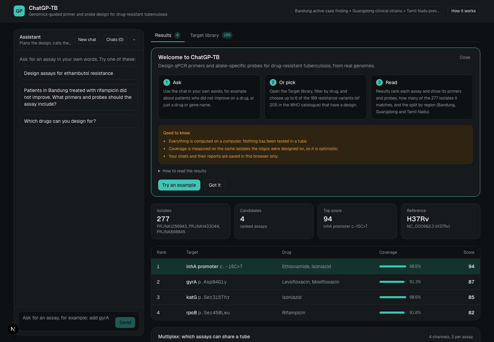

GenoHack 2026 · primer and probe design for drug-resistant TB · status 24 October 2026, 19:15 WIB · in silico only
ResistTB turns public M. tuberculosis genomes into qPCR primers and allele-specific probes for drug-resistance variants. A cloud VM calls variants per isolate (snippy, FreeBayes, TB-Profiler). A Python library designs oligos on the population consensus, checks them against every isolate (overall, by lineage, by region), screens off-target amplification, scores them and tests tube sharing. A Gemini agent on Vertex AI turns free text into a design call; a web interface shows ranked assays and a library of 205 WHO resistance variants. Nothing has been tested in a tube.
Pipeline: Stage A (VM, per isolate) → snapshot → Stage B (design) → library and agent → API on Cloud Run → interface.
| Area | State |
|---|---|
| Bandung 222 isolates processed | Done |
| Tamil Nadu + Guangdong (234 runs), pooled design, region grouping | Running: about 150 of 234 at 12:12 UTC; 27 retries, 0 gave up |
| WHO target library (205), lookup, chat for any variant, patient-scenario handling | Done |
| Interface: library tab, saved chats with a report each, minimizable assistant, onboarding | Done |
| Cloud Run service (public, rate-limited) | Live, but an old build (4 targets, Bandung only) |
| Rebuild on pooled data and redeploy | After the VM run |
| Held-out validation (779 other Indonesian runs); wet-lab validation | Not started |
Bandung only (222 isolates), final. Overall score = 0.30 conservation + 0.30 thermodynamics + 0.20 specificity + 0.20 WHO evidence.
| Assay | Score | Exact match | Note |
|---|---|---|---|
| inhA promoter c.-15C>T | 94 | 221/222 | tube 1 with gyrA |
| gyrA p.Asp94Gly | 87 | 205/222 | needed relaxed tolerance (10%) |
| katG p.Ser315Thr | 85 | 219/222 | 2 H37Rv near-matches; tube 2 with rpoB |
| rpoB p.Ser450Leu | 83 | 212/222 | weakest thermodynamics |
figures/).Partial pooled (277 isolates), will change. rpoB S450L: exact match Bandung 212/222, Guangdong 36/43, Tamil Nadu 6/12; inhA c.-15 in Tamil Nadu 9/12. Library 189/205 designed. Regions differ in lineage mix (Guangdong mostly lineage 2, Tamil Nadu mostly lineage 1, Bandung lineages 4 and 2), which is why coverage is shown per region.
Dataset mix of 290 finished isolates: Bandung 222, Guangdong 52 (MDR 21, pre-XDR 13, XDR 1), Tamil Nadu 16. The new regions add many more resistant isolates; Bandung has only 2–8 carriers of each target mutation.

Report-first layout with the minimizable assistant, Results and Target library tabs, and the welcome card. Shows 277 isolates (partial data), so the counts are not final.
| Resource | Details | Cost (list-price estimate) |
|---|---|---|
VM genohack-run-0 | us-east4-a, e2-standard-16, 100 GB disk, on-demand; hard stop about 22:33 UTC; shuts itself down when done | about $0.66/h; run about $6–8; disk about $0.37/day after stop |
Bucket haduh-512512-genohack | results 531 MiB, BLAST index 803 MiB, backups, logs | pennies |
Cloud Run resisttb | asia-southeast1, public, min 0 / max 1, 1 vCPU / 1 GiB, 20 chats per IP per hour | about $0 idle |
| Vertex AI | gemini-3.5-flash-lite, location global | not measured |
| Other | Artifact Registry (110 MB), source bucket, 2 email-only budget alerts (IDR 500,000) | negligible |
These are estimates from list prices, not from the billing console. Billing is in IDR; alerts do not stop spending. Open items: delete the VM and disk after results are synced (needs the owner’s OK); remove default SSH/RDP firewall rules open to 0.0.0.0/0.
pnpm build:site).gcloud run deploy resisttb --source . in asia-southeast1 with service account resisttb-run (Vertex AI user only) and env GENOHACK_PROJECT, GENOHACK_LOCATION=global./api/health, one design, one chat. Lowest-cost standing setup: Cloud Run plus the bucket; no VM.The container needs no results folder and no BLAST database: it reads a few-MB snapshot and a cached off-target table. Full commands are in docs/HANDOVER.md, section 15.
Full detail, runbook, parallel-session notes and references: docs/HANDOVER.md.